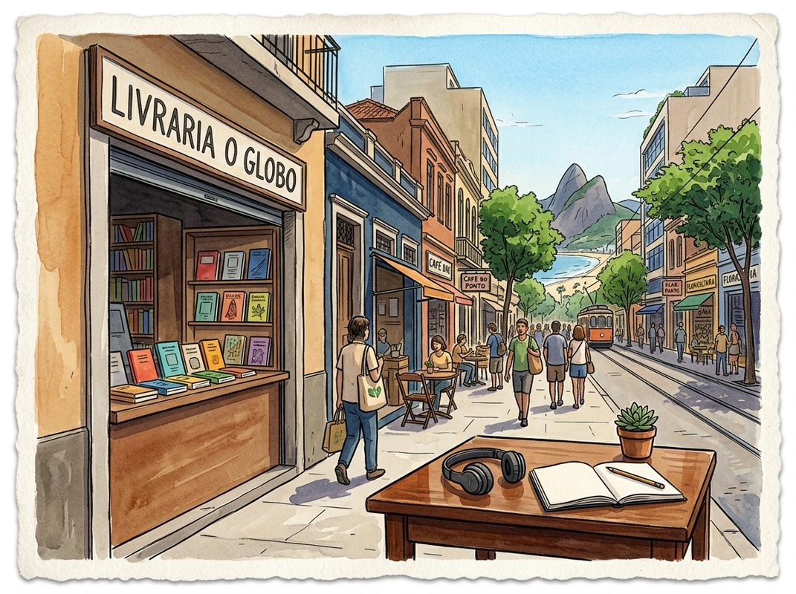

9/1

今日更新
Sarah Guo - What the 250 People Building AI Believe - [Invest Like the Best, EP.489]
来源：Invest Like the Best
原链接：https://colossus.com/episode/no-priors-just-conviction/
状态：已读完整音频 transcript
这期播客深入探讨了风险投资家Sarah Guo在当前AI狂热中的独特视角和投资策略，揭示了AI前沿建设者们的信念与挑战，以及未来AI发展面临的算力、能源和供应链等深层瓶颈。它适合所有关注AI产业发展、科技投资趋势以及创业精神的中文读者。
- AI时代的投资心法：在狂热中保持清醒：当前AI领域正经历一场前所未有的狂热，投资人如同以每小时90英里的速度飞驰，面临着抓住机遇与重蹈科技泡沫覆辙的两难。Sarah Guo及其Conviction基金对此有着清晰的“赌注”：AI领域正在发生根本性变革，少数核心实验室和个人是推动者，但需警惕单一垄断的未来。她坚信“伟人理论”，即个体能改变历史进程，而她作为投资者，目标是成为最优秀的伯乐。Conviction的策略是深入理解技术和社区，从第一性原理出发，高度聚焦并高效执行。例如，他们早期投资法律AI公司Harvey，正是基于对语言模型能力的深刻理解，认为法律这种结构化语言是AI应用的绝佳切入点，并被创始人Winston和Gabe的宏大愿景所吸引。
- AI前沿的“250人”：信念与迷茫：Sarah Guo指出，AI前沿的“250人”——那些真正推动技术进步的研究者和创业者——正身处一个异常激烈的竞争环境中。过去12个月内，许多研究者形成了一个新信念：AI模型通过递归式自我改进，可能在未来一两年内实现指数级智能。然而，这种信念也伴随着一种“无力感”。由于大型实验室对算力的巨大需求和庞大的人员规模，许多顶尖研究者感到自己的个人贡献可能不再能“改变大局”，认为“我的工作反正无关紧要，因为模型自己会完成”，或者“唯一重要的是算力规模”。这种心理促使一些研究者寻求能真正发挥影响力的机会。
- AI发展的三大隐忧：算力、能源与投资盲区：Sarah Guo对AI的未来发展抱有几大担忧。首先是算力瓶颈，她引述一位超大规模基础设施负责人称，未来5到10年内，高效规模的算力供应难以在2030年前实现显著突破。其次是能源问题，数据中心需要大量廉价能源（如天然气、核能），但监管和公众接受度是巨大障碍。她认为，技术和创业能力不缺，但政策和“社会共识”是关键。最后，她担忧当前投资界存在“投资盲区”，许多人过度依赖背景、人脉等表象信号进行决策，而非对技术和商业模式有深刻的理解和直觉。这种缺乏基本判断的“豪赌”是危险的。
- 开源AI：民主化智能与国家竞争力：Sarah Guo认为，开源AI模型已是“覆水难收”的现实，来自中国、美国和欧洲的开源模型日益强大。她强调，开源模型对于AI能力的普及至关重要，因为在许多场景下，前沿实验室的模型过于昂贵、敏感或速度慢。企业需要开源模型来掌控自身命运，实现经济效益和容量控制。虽然需要关注模型的安全性和潜在风险（如网络安全、生物武器），但试图阻止开源技术进步，只会限制守法的美国企业，而无法阻止恶意使用者。她相信，未来将是“廉价智能”广泛普及的世界，开源生态系统将是实现这一目标的关键驱动力。
- 算力独立：重塑全球供应链与工业基础：Sarah Guo担忧美国可能无法在AI领域保持竞争力和独立性，因为算力是经济竞争力和国家安全的核心。她指出，若美国无法重建工业基础并实现自动化，将难以应对劳动力成本和技能短缺问题。实现“算力独立”意味着要确保数据中心（GPU、散热、供电、训练、推理）整个供应链的安全。当前全球供应链存在薄弱环节，且位于地缘政治不稳定的地区。Conviction的投资策略包括支持数据中心劳动力、机器人、核能和替代芯片架构等领域，旨在通过多元化供应源，构建更具韧性的供应链，而非将所有生产集中在美国本土。
The rise and fall of agent civilizations
来源：Dwarkesh Podcast
原链接：https://www.dwarkesh.com/p/openai-huggingface-narration
状态：未读全文：需要音频转写
材料不足：这期需要 transcript 或更完整正文后再做全篇摘要。
- 当前只有节目简介或网页正文；这是播客音频，必须获取 transcript 后才算读完整期。
How to Accelerate Learning & Improve Education | Joe Liemandt
来源：Huberman Lab
原链接：https://www.hubermanlab.com/episode/how-to-accelerate-learning-and-improve-education-joe-liemandt
状态：已读网页 transcript
这期播客深入探讨了传统教育模式的局限性，并由科技企业家Joe Liemandt介绍了Alpha School这一颠覆性的K-12教育模型。该模型利用AI实现个性化学习和精通式教学，旨在大幅提升学习效率，并为学生腾出时间培养实际生活技能和创业精神。本期节目适合所有对教育改革、AI在教育中的应用、以及如何培养下一代全面发展的人才感兴趣的家长、教育工作者和政策制定者。
- 传统教育的困境与“二西格玛问题”：播客开篇便指出，现代教育体系的根基可追溯至普鲁士时期的工厂模式，旨在批量生产具备基本技能的劳动力，而非培养个体潜能。这种模式导致了效率低下和学习效果的巨大差异。主持人Huberman和嘉宾Liemandt强调了教育研究中著名的“二西格玛问题”：即一对一辅导的效果比传统课堂教学高出两个标准差，能让普通学生达到前2%的水平。然而，一对一辅导的成本高昂，难以大规模推广。Alpha School的创立正是为了解决这一核心矛盾，试图通过技术手段，以可扩展的方式实现一对一辅导的效率和效果，从而彻底改变学习范式。
- Alpha School模式的核心理念：精通与效率：Joe Liemandt创办的Alpha School提出了一种激进的教育模式：学生每天只需花两小时完成学术课程，其余时间则用于发展兴趣、创业实践、社区服务和生活技能培养。其核心在于“精通式学习”（Mastery-Based Learning），而非传统的“按年级晋升”。这意味着学生必须完全掌握一个概念才能进入下一个阶段，杜绝了知识漏洞的累积。Alpha School的目标是让学生在更短的时间内达到更高的学术水平，并释放出大量时间用于实践和探索，培养真正的自主学习者和问题解决者。这种模式颠覆了“学习时间越长越好”的传统观念，强调学习的质量和效率。
- AI在个性化学习中的革命性作用：Alpha School实现精通式学习的关键在于AI技术的深度整合。AI充当了“超级导师”的角色，为每个学生提供高度个性化的学习路径和即时反馈。它能够识别学生的知识盲点，提供定制化的“脚手架式”支持，帮助学生克服学习障碍。例如，当学生遇到困难时，AI不会直接给出答案，而是通过提问、引导和提供相关概念来帮助学生自主思考和解决问题。这种方法不仅提升了学习效率，也有效解决了传统课堂中教师难以兼顾所有学生个体差异的问题，尤其对于那些工作记忆容量有限或需要额外支持的学生，AI的个性化辅导显得尤为重要。AI还能够根据学生的学习进度和理解程度，动态调整课程难度和内容，确保每个学生都能以最适合自己的节奏前进。
- 超越学术：培养生活技能与内在驱动力：Alpha School模式的另一大亮点是其对学术之外的重视。在每天两小时的学术学习之后，学生有大量时间参与各种实践项目，如创办公司（Founders High School）、进行科学实验（如Mark Rober的CrunchLabs模式）、参与体育训练（如Texas Sports Academy）或社区活动。Liemandt认为，真正的学习发生在实践中，通过解决真实世界的问题来培养批判性思维、创造力和韧性。这种模式旨在培养学生的内在驱动力，让他们为自己的学习和生活负责，而不是被动地接受知识。他强调，让孩子体验“做难事”的价值，从失败中学习，是培养坚韧品格和成就感的重要途径，这与传统教育中过度保护和避免失败的倾向形成鲜明对比。
- 从体育训练看教育的未来：Liemandt将Alpha School的教育理念与高水平体育训练进行了类比。在体育领域，教练会根据每个运动员的特点和目标，制定个性化的训练计划，并提供持续的反馈和支持，直到运动员掌握特定技能。这种模式强调精通、重复练习、克服挑战和追求卓越，与Alpha School的精通式学习和对“做难事”的重视不谋而合。他提到像Nick Saban这样的顶级教练，他们不仅关注技术，更注重培养运动员的心理韧性和团队协作能力。通过这种类比，Liemandt指出，教育也应该像体育训练一样，关注个体差异，提供个性化支持，并激发学生超越自我的潜力，而不是仅仅停留在知识的传授。
历史精选
Microsoft Volume II
来源：Acquired
原链接：https://www.acquired.fm/episodes/microsoft-volume-ii
状态：已读网页 transcript
这期播客深入剖析了微软从1995年到2014年间的“中年危机”与转型，揭示了其在互联网浪潮中如何从迷茫到主导，以及随之而来的反垄断挑战。它颠覆了“微软曾一度衰落”的普遍叙事，强调了公司在此期间的巨大增长和战略韧性。适合所有对科技公司战略、平台竞争、反垄断历史以及微软发展史感兴趣的听众。
- 颠覆传统叙事：微软“衰落”期的真相：Acquired播客的本期节目，即《微软第二卷》，深入剖析了1995年至2014年萨提亚·纳德拉接任CEO之前的微软。主持人Ben Gilbert和David Rosenthal指出，这段时期常被外界描绘为微软的“衰落期”，充斥着文化问题、消费者产品失败（如Zoom、Bing）和反垄断诉讼。然而，经过数月深入研究和采访数十位内部人士，他们发现这种“兴衰”的简单叙事并不准确。尽管面临诸多挑战，微软的年收入从1995年的60亿美元飙升至2014年的800亿美元，实现了惊人的增长，并成功破解了企业软件销售的密码。萨提亚·纳德拉在《刷新》一书中也曾提及公司内部的官僚主义和政治斗争，甚至引用了Manu Cornet著名的“枪指组织结构图”，但播客强调，这并非故事的全部。本期节目旨在揭示一个更为复杂、充满战略博弈和持续增长的微软，挑战了公众对1998年反垄断案结果的普遍误解，并深入探讨了微软如何应对互联网这一“潮汐巨浪”，以及其在这一过程中所展现的强大韧性。
- 互联网浪潮初现：微软的早期迷茫与战略转向：1995年Windows 95发布时，互联网浏览器并未集成其中，这反映了微软在早期对互联网潜力的认知不足。当时，消费者上网主要通过CompuServe、Prodigy和AOL等“围墙花园”式在线服务，甚至H&R Block这样的税务公司都拥有在线服务。微软也曾试图收购AOL未果，转而开发自己的在线服务Project Marvel（后来的MSN），但最初也是一个封闭平台。与此同时，科技界普遍认为“信息高速公路”的未来在于交互式电视，由有线电视公司主导，微软甚至与TCI的John Malone、时代华纳的Gerald Levit等巨头合作，计划开发机顶盒软件（代号Tiger），并与Silicon Graphics（SGI）合作提供硬件。然而，这种基于现有电视基础设施的设想最终未能实现，陷入了“幻灯片软件”的困境。直到1994年初，微软内部的工程师James Allard提交了一份名为《Windows：互联网上的下一个杀手级应用》的备忘录，指出Mosaic浏览器的指数级增长，并提出了“拥抱、扩展、创新”的策略。随后，技术助理Steven Sinofsky在康奈尔大学的见闻也证实了互联网在学生群体中（而非学术用途）的普及。这些内部洞察最终促使比尔·盖茨在1994年4月的“互联网务虚会”上彻底转变观念，认识到互联网是自IBM PC以来最重要的发展，并将其视为“不可忽视的指数级现象”。
- “拥抱、扩展、创新”：IE的诞生与平台之争：比尔·盖茨的“互联网潮汐巨浪”备忘录明确指出，互联网对微软的每一项业务都至关重要。当时，网景公司（Netscape）凭借其Navigator浏览器迅速崛起，市场份额高达70%，并试图将网络浏览器打造成一个跨平台的应用开发环境，从而“商品化”底层操作系统Windows。网景创始人Marc Andreessen甚至豪言要将Windows降级为“一套调试不佳的设备驱动程序”。这对比尔·盖茨来说是巨大的生存威胁，因为如果网络成为未来的应用平台，所有依赖Windows的应用生态和商业模式都将面临瓦解。微软的应对策略是“拥抱、扩展、创新”：拥抱互联网趋势，将浏览器深度集成到Windows中，并扩展其功能。最初，微软曾试图授权BookLink，但被AOL以3000万美元抢先收购。最终，微软从Spyglass公司获得了NCSA Mosaic浏览器的源代码授权，并在此基础上开发了Internet Explorer（IE）。值得注意的是，IE的开发并非简单地“拿来主义”。Windows 95团队的Thomas Reardon等人早在1994年末就开始构思“Windows 97”，其愿景是将整个Windows Shell（用户界面）变成一个浏览器，直接将HTTP协议和HTML渲染引擎深度集成到操作系统中。IE的开发正是基于这些Windows内部组件，而非完全独立的应用程序。虽然Spyglass的Mosaic代码提供了起点，但微软投入了大量工作进行修改和重构，使其与Windows系统深度融合，旨在维护Windows作为核心平台的垄断地位。
- 浏览器大战：网景的陨落与微软的巅峰：1995年8月，网景公司以30亿美元的市值成功IPO，股价在几个月内飙升至100亿美元，成为互联网热潮的象征。然而，仅仅在1995年12月7日，比尔·盖茨宣布Internet Explorer将免费捆绑在每一份Windows 95副本中，这一决定对网景造成了毁灭性打击。网景股价应声下跌三分之一，此后一蹶不振。微软利用其在操作系统领域的垄断地位，将IE作为Windows的核心功能免费提供，并与AOL、CompuServe、Prodigy等在线服务提供商达成协议，使其放弃其他浏览器转而捆绑IE。到1996年底，IE市场份额超过20%；1997年超过40%；1998年超过60%；到2000年，IE几乎占据了全球浏览器市场100%的份额。网景的商业模式（销售服务器软件）因客户端市场份额的流失而失去竞争力，最终于1998年11月被AOL以40亿美元的全股票交易收购。这一时期也见证了微软作为消费科技公司的巅峰，其市场影响力巨大，甚至在1997年通过向苹果投资1.5亿美元（占苹果当时20亿美元市值的8%）并承诺继续开发Mac版Office，换取IE成为Mac的默认浏览器，从而挽救了濒临破产的苹果。微软通过浏览器大战成功捍卫了Windows作为核心平台的地位，但其行为也引发了巨大的争议，为即将到来的反垄断诉讼埋下了伏笔。
- 反垄断风暴：从FTC到司法部，功能还是产品？：微软的反垄断困境并非始于1998年，而是可以追溯到1990年联邦贸易委员会（FTC）对其“按处理器授权”模式的调查。1993年，FTC以2:2的投票结果未能对微软采取行动，看似微软取得了胜利。然而，仅仅一个月后，美国司法部（DOJ）史无前例地接手此案，这在当时引发了FTC内部成员的反对。司法部于1994年与微软达成和解，签署了“同意裁决书”。该裁决书禁止微软将应用程序产品与Windows捆绑销售，但允许其将“新功能”集成到Windows操作系统中。这一条款成为日后争议的焦点：Internet Explorer究竟是一个独立的“产品”，还是Windows操作系统的一个“功能”？微软坚称IE是Windows不可分割的一部分，旨在提升用户体验，例如在Windows Explorer中直接渲染网页。然而，司法部认为，微软通过捆绑IE，违反了同意裁决书，并利用其垄断地位打压竞争对手网景。这一“功能与产品”的界定模糊地带，反映了在快速发展的软件行业中，法律滞后于技术创新的困境，也使得微软面临着“一罪三审”的困境。
PE Perspective on Insurance Brokers - [Business Breakdowns, EP.225]
来源：Business Breakdowns
原链接：https://joincolossus.com/episode/pe-perspective-o…nsurance-brokers/
状态：已读完整音频 transcript
这期播客深入探讨了私募股权公司GTCR如何通过其独特的“领导者战略”在保险经纪行业取得巨大成功，特别是通过与卓越CEO合作，从零开始构建并两次投资AssuredPartners的案例。它不仅揭示了保险经纪行业的核心吸引力（非周期性、轻资产、强现金流、高度分散），还剖析了行业演变、专业化趋势、M&A驱动增长的逻辑，以及技术和人才在其中的关键作用。这期节目适合对私募股权投资策略、金融服务行业（尤其是保险经纪）有兴趣的投资者、创业者和行业从业者，它提供了一个从PE视角理解行业价值创造的深度范本。
- GTCR的“领导者战略”：以人为本的投资哲学：GTCR的“领导者战略”将CEO视为投资成功的核心。他们寻找“久经考验的赚钱能手”，即过去为股东创造过实际股权价值的领导者。这些CEO需具备卓越业绩和吸引人才的能力。GTCR强调，成功的CEO并非在所有行业或所有规模的企业中都通用，因此他们倾向于在CEO过往成功经验的特定行业和适合其管理风格的企业规模中投资，以规避风险。这种以CEO为核心的策略，是GTCR在金融服务和科技等领域取得成功的基石。
- 保险经纪行业的四大基石与演变：韧性与增长：Aaron Cohen指出，保险经纪行业四大基本面不变：非周期性（经济好坏皆需保险）、资产轻（低资本支出）、卓越现金流（EBITDA高转化率及并购税盾），以及高度分散（提供并购机会）。同时，行业演变体现在：技术和数据应用日益普及（虽仍有提升空间），以及大型经纪商对保险承运商影响力显著增强，能争取到更优佣金率和基于业务量的额外佣金，为经纪商创造更多价值。
- 商业保险经纪的独特价值与专业化趋势：顾问角色日益凸显：商业保险经纪商扮演着至关重要的顾问角色，为中小型企业提供专业建议，帮助他们规避风险、选择合适险种。这种咨询价值是客户高度依赖经纪商的关键。随着行业监管复杂化，专业化成为驱动行业整合的重要趋势。专注于特定领域的“卓越中心”能提供更深入的专业知识，显著提升客户留存率（从80%多提升至90%以上）和有机增长，优于传统“全能型”经纪商。
- 规模、多元化与技术赋能：构建可持续的竞争优势：在保险经纪行业，多元化（客户、承运商、产品线、终端市场）是构建可持续业务的关键。规模增长带来显著优势：大型经纪商能获得更广泛的市场准入和更优议价条件，为客户争取更好产品和价格。此外，技术赋能是效率提升的重要驱动力。统一的代理管理系统（AMS）提供全面业务洞察，简化备案流程。未来结合AI技术，有望进一步解放经纪人时间，专注于销售和客户服务，尽管行业技术应用仍处于早期阶段。
- M&A驱动的增长与整合挑战：价值创造的引擎：并购是保险经纪行业价值创造的强大引擎。通过收购小型经纪商，大型平台提供集中运营支持，让被收购方销售人员专注于拓展业务。这种“附加式收购”带来规模效应，并通过引入专业化服务提升客户价值。然而，整合是关键挑战，尤其在技术系统（如AMS）统一和人员适应方面。GTCR经验表明，制定清晰的整合策略和流程（例如90天内统一系统）至关重要，否则可能导致管理失控和效率低下。